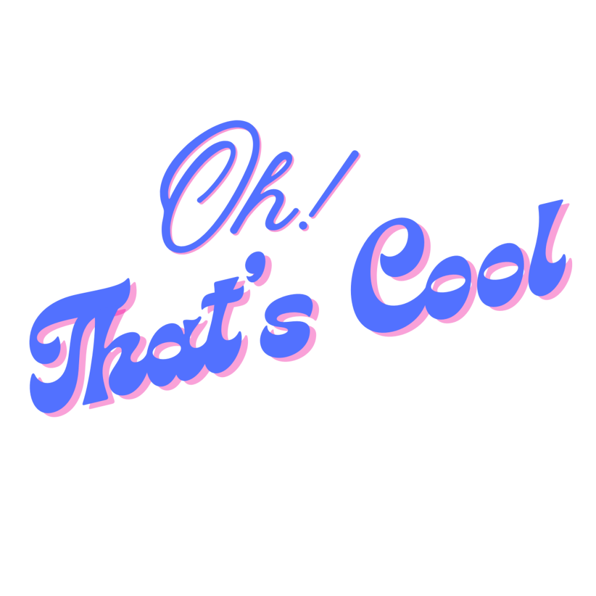
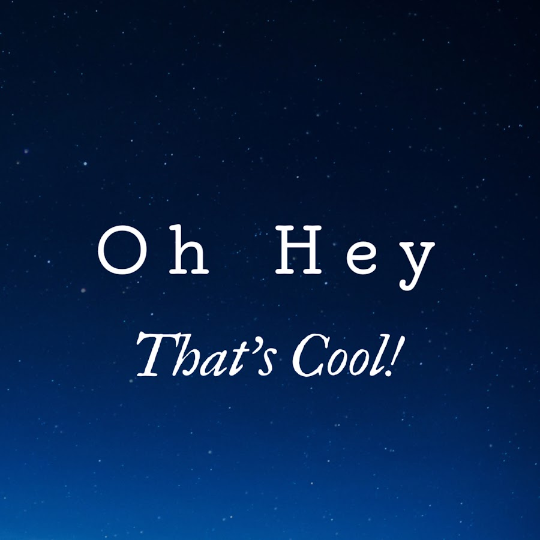

Oh! That's Cool not influencing
Just existing in today's ever changing world
I wanted to provide you with a place
To give some Feedback.
That's Cool!
Where we highlight the amazing people
Finally a community
That's founded and grounded
In simplicity and quality
Oh! what great individuals.
But gone are the days
Of someone telling you
About something
That you really don't care about.
Oh that's cool
I found a super response
getting peeved out
By a such an unfortunate problem
So in that response.
I say something as mundane
To some people
As if they think I really meant it
I respond with “I guess” or “not really”
That whatever they're doing
Is actually cool and important.
Don't see anyone else
Do you feel down when someone says
“Oh hey, that's cool?”
And replies with
“Oh wow isn’t that nice.”
Have you ever seen something
That's dedicated to you
What to say
So you say “Oh Good.”
How do you respond to that
Like "That's cool" or "Oh wow”
The weird, odd, or otherwise interesting things
The approval, appreciation, or agreement.
Something they’ve said or done
They don’t have anything else to say
Doesn’t wanna offend you
Truly thinks they’re that cool
So I laugh at what's funny.
 